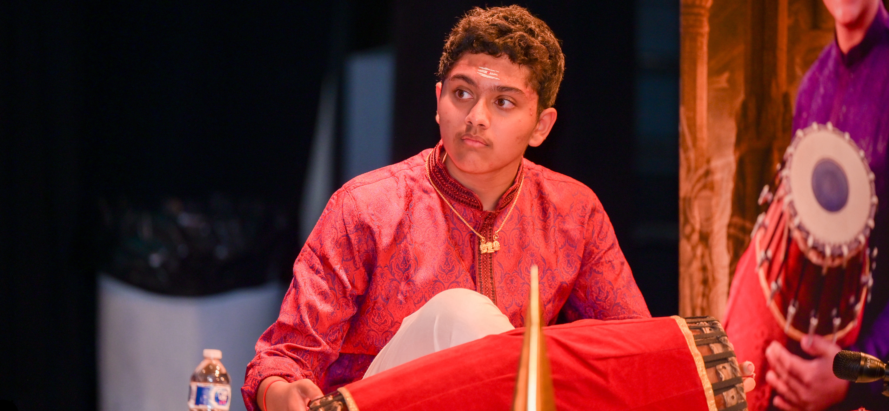

Rayaansh Kaushik
shishya - mridangam - sadhana

Based in Raleigh, North Carolina, Rayaansh Kaushik is an emerging young performer of the divine Indian percussion instrument, the mridangam. He is a disciple of Kalaimamani Shri K.V. Prasad. Deeply rooted in the carnatic tradition, Rayaansh represents a new generation of musicians dedicated to preserving and evolving the rhythmic heritage of carnatic music.